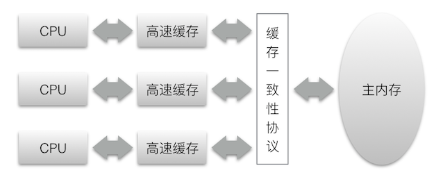
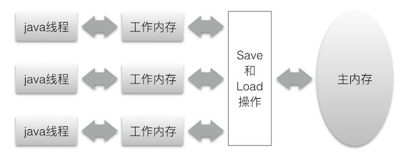

由于当今计算机的发展现状，计算机的存储设备（内存、磁盘）与CPU的运算速度有好几个数量级的差距。因为计算机不可能仅靠寄存器来完成所有运算任务，为了更加高效的利用运算能力，现代计算机系统都不得不加入一层读写速度尽可能接近处理器运算速度的高速缓存（Cache）来作为内存与处理器之间的缓冲：把运算需要使用到的数据复制到缓存中，让运算能快速进行，当运算结束后再从缓存同步回内存之中，这样处理器就无须等待缓慢的内存读写了。除了增加了高速缓存之外，为了使得处理器内部的运算单元能尽量被充分利用，处理器可能会对输入代码进行乱序执行优化。

Java内存模型
不同架构的物理机可以拥有不一样的内存模型，而Java虚拟机也有自己的内存模型，它与硬件的内存模型有很大的相似之处。Java内存模型规定，所有变量都存储在主内存中（类似操作系统的住内存），每条线程还有自己的工作内存（类似于高速缓存）。与处理器的乱序优化类似，Java虚拟机的即时编译中也有类似的指令重排序优化。

这里所讲的主内存、工作内存与前面所说的java堆，栈，方法区等是不同维度的内存划分，两者之间并没有关系。
Java内存模型中定义了8中操作来完成内存间的交互操作：lock、unlock、read、load、use、assign、store、write。如果要把一个变量从主内存复制到工作内存，那就要顺序的执行read和load操作，如果要把变量从工作内存同步回主内存，就要顺序的执行store和write操作。Java内存模型只要求上诉两个操作必须是按顺序执行的，而没有保证是连续执行的。因此在read和load之间、store和write之间是可能插入其他指令的。
关键字wolatile是Java虚拟机提供的最轻量级的同步机制。当一个变量定义为volatile以后，它将具备两种特性：
- 第一是保证次变量对所有线程的可见性
- 第二是禁止指令重排序优化
这里可见性是指当一个线程修改了这个变量的值，新值对于其他线程是可以立即得知的。要注意一点，volatile的线程可见性并不能保证volatile变量的并发运算是安全的。由于Java里的运算并非原子操作，因此volatile变量的运算在并发下一样是不安全的。
并发问题实质上就是，java内存模型在并发过程中如何处理原子性、可见性和有序性的问题。
Java线程
线程的实现主要有三种方式：使用内核线程实现、使用用户线程实现、使用用户线程加轻量级进程混合实现。内核线程直接由操作系统内核通过操纵调度器进行调度，程序一般不会直接去使用内核线程，而是去使用内核线程的一种高级接口——轻量级进程（LWP），轻量级进程与内核线程之间是1:1的关系。用户线程与进程是N:1的关系。用户线程加轻量级进程混合实现是N:M的关系。
在Windows和Linux平台上，Java都是使用一对一的线程模型实现的，一条java线程就映射到一条轻量级进程中。java的线程调度采用抢占式线程调度。Java语言定义了线程的5中状态：新建、运行、等待（无限期等待、有限期等待）、阻塞、结束。
线程安全定义：当多个线程访问一个对象时，如果不用考虑这些线程在运行时环境下的调度和交替执行，也不需要进行额外的同步，或者在调用方进行任何其他协调操作，调用这个对象的行为都可以获得正确的结果，那这个对象是线程安全的。
对于java中各种操作共享的数据可以分为以下5类：不可变、绝对线程安全、相对线程安全、线程兼容、线程对立。
实现线程安全的方法，大致可以分为以下几类：
- 互斥同步。这是最常见的并发安全手段，在Java中可以通过synchronize、ReentrantLock来实现。ReentrantLock相比synchronize主要增加了以下功能：等待可中断、可实现公平锁，以及锁可以绑定多个条件。
非阻塞同步。互斥同步会因为线程阻塞和唤醒带来性能问题，因此互斥同步也称为阻塞同步，也就是悲观锁。而非阻塞同步则是采用了乐观锁的方式。通俗的说，就是先进行并发操作，如果没有其他线程竞争就直接成功。、如果共享数据有竞争，产生了冲突，那就再采取补偿措施（通常是不断的重试，直到成功为止），这种并发策略的实现不需要把线程挂起，因此成为非阻塞同步。其中典型的例子就是AtomicInteger类的incrementAndGet操作，它的实现非常简单，JDK源码如下：
123456789public final int incrementAndGet() {for(;;) {int current = get();int next = current + 1;if (compareAndSet(current, next)) {return next;}}}其中compareAndSet操作是从JDK1.5之后通过sum.misc.Unsafe类才支持的CAS指令。
无同步方案。如果一个方法本来就不涉及共享数据，那就不需要同步措施。主要分为两类：可重入代码和线程本地存储。如java中的ThreadLocal对象。
在JDK1.5到1.6的版本中，一个重要的改进就是高效并发。HotSpot虚拟机团队花费了大量的精力去实现各种锁的优化技术，如自旋锁、自适应自旋、锁消除、锁粗化、轻量级锁和偏向锁等。